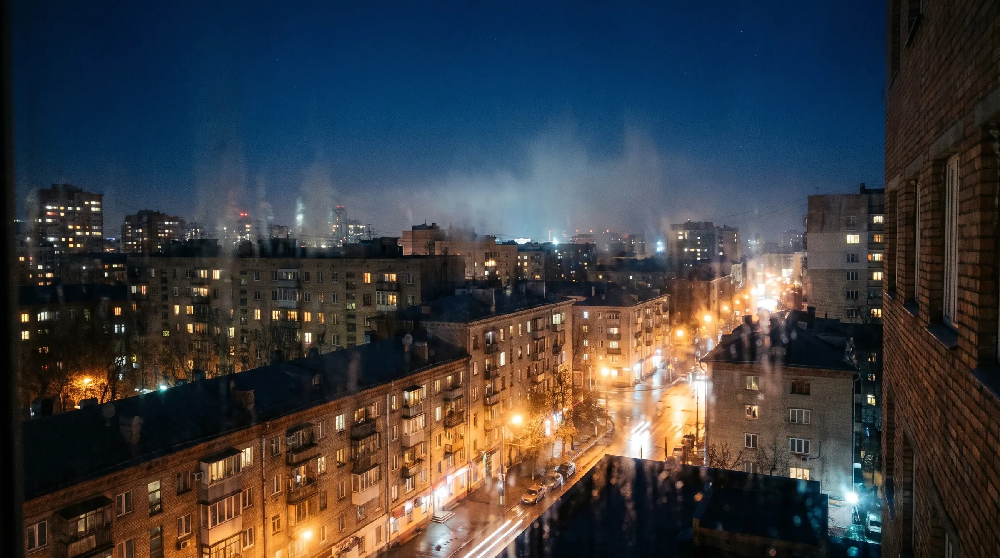
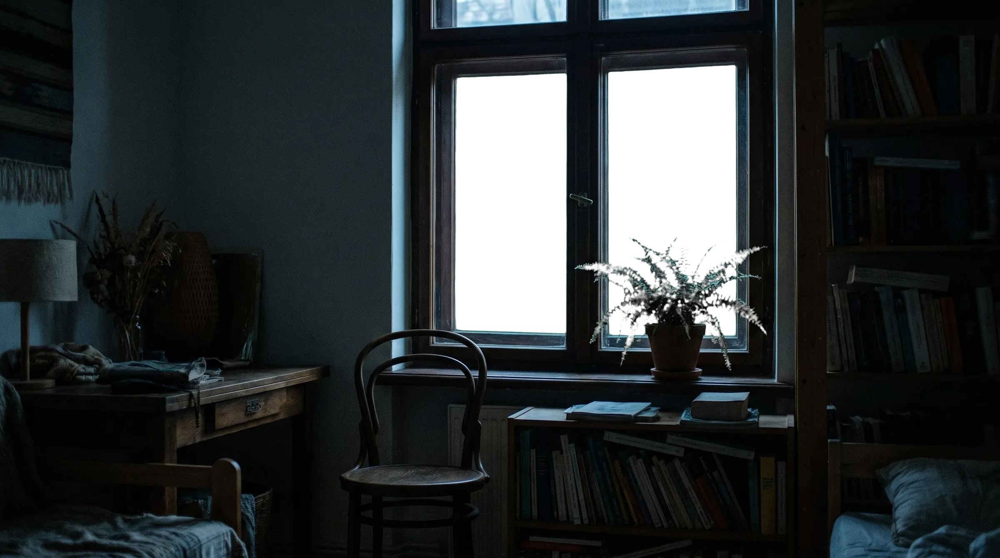
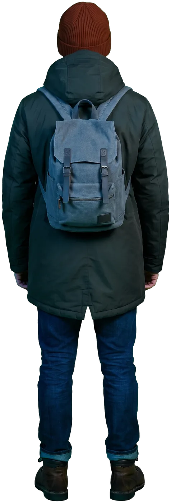
Листайте — занавес тоже не жаворонок
Бумажный театр представляет
Рассвет
пьеса о человеке, который ни разу
не вставал в пять утра
Чтобы не проспать, он просто не ложился
Лист I · Окно · 03:12
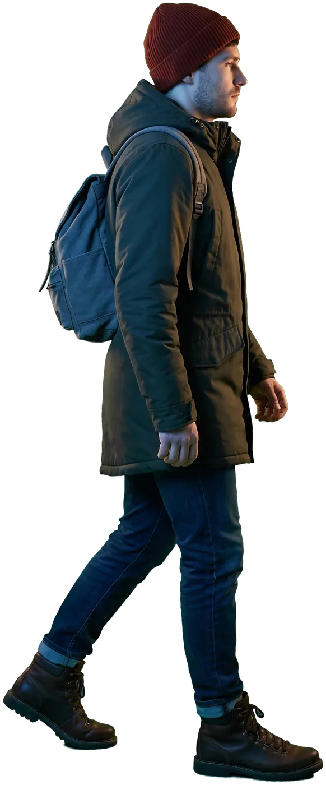
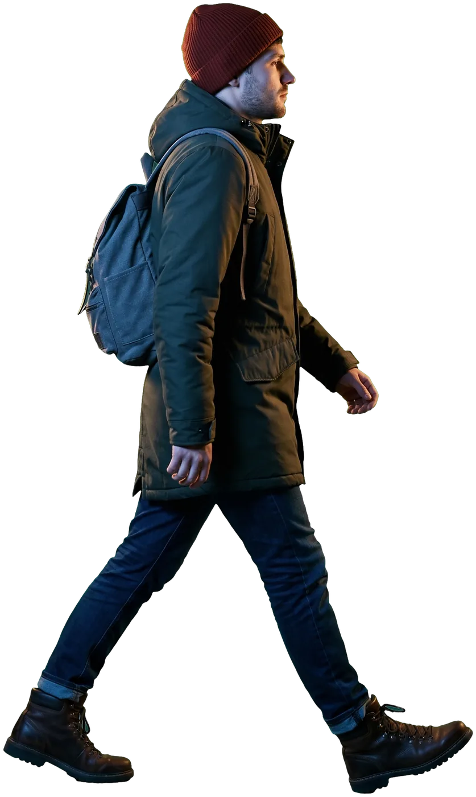
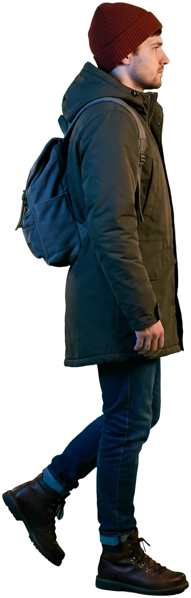
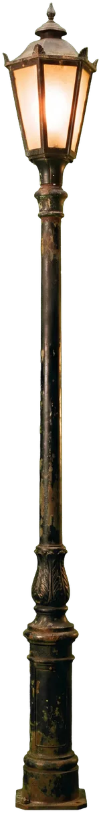
Обычно в это время я досматриваю последнюю серию.
Лист II · Улица · 03:40
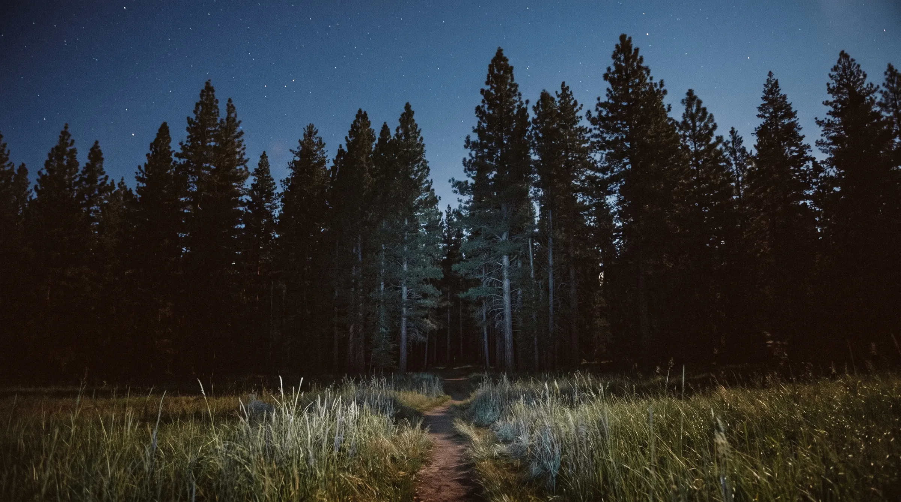
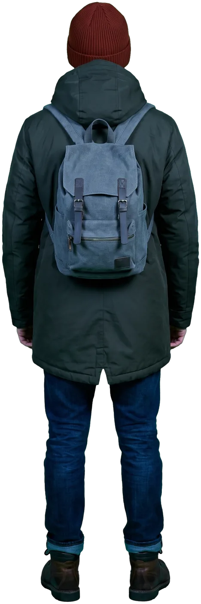
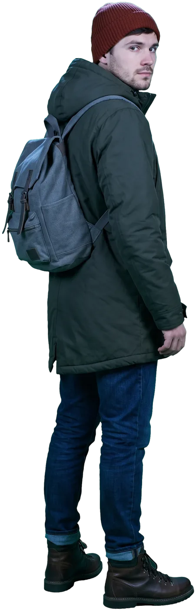
Пока, город. Потом расскажу, что ты проспал.
Лист III · Опушка · 04:05
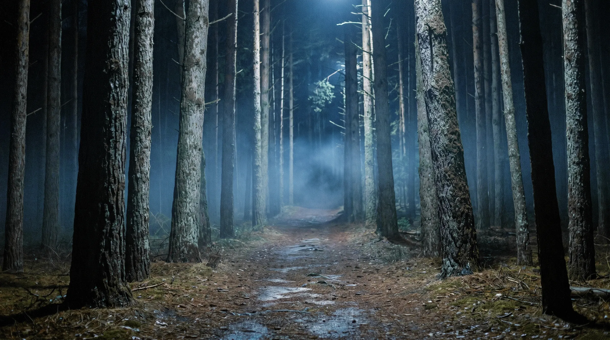
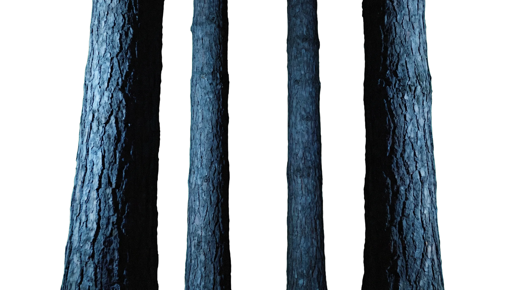
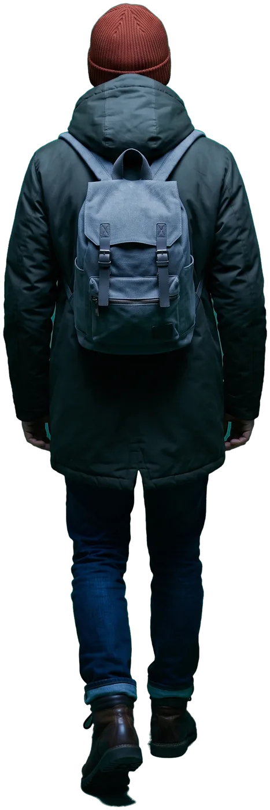
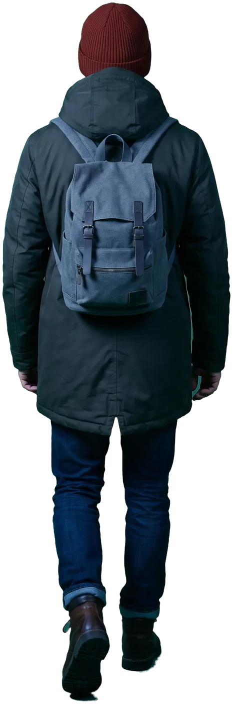
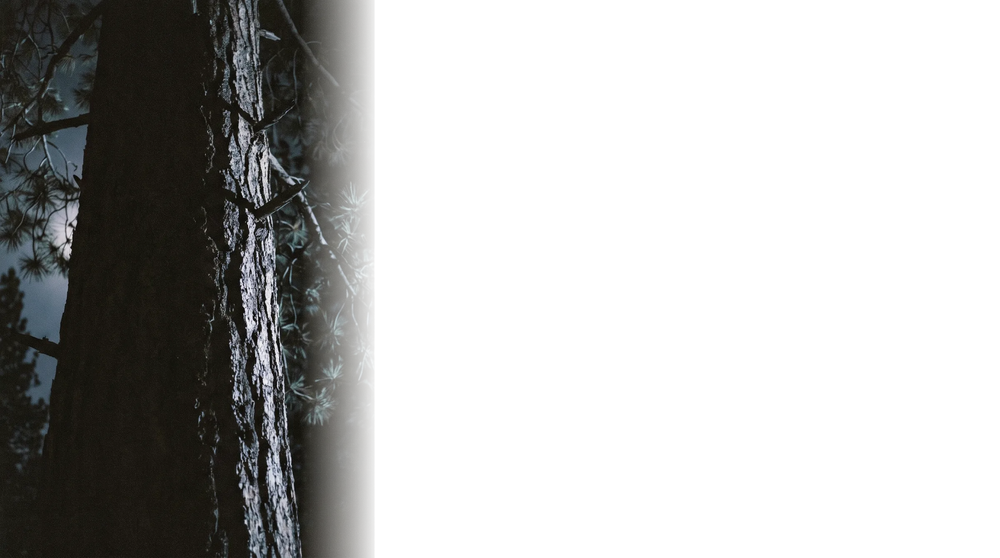
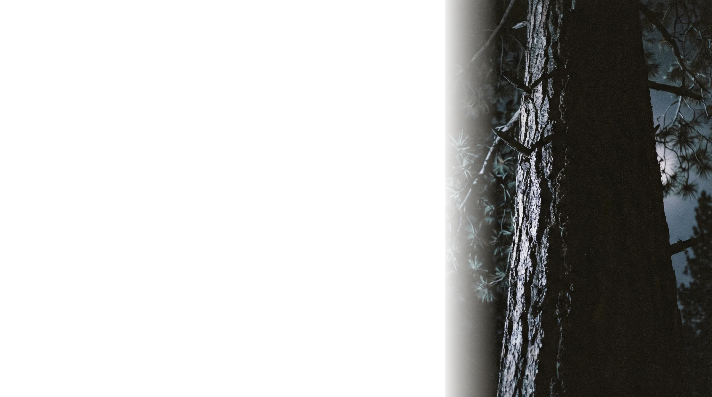
Полпятого. Днём эта тропинка была короче.
Лист IV · Лес · 04:26
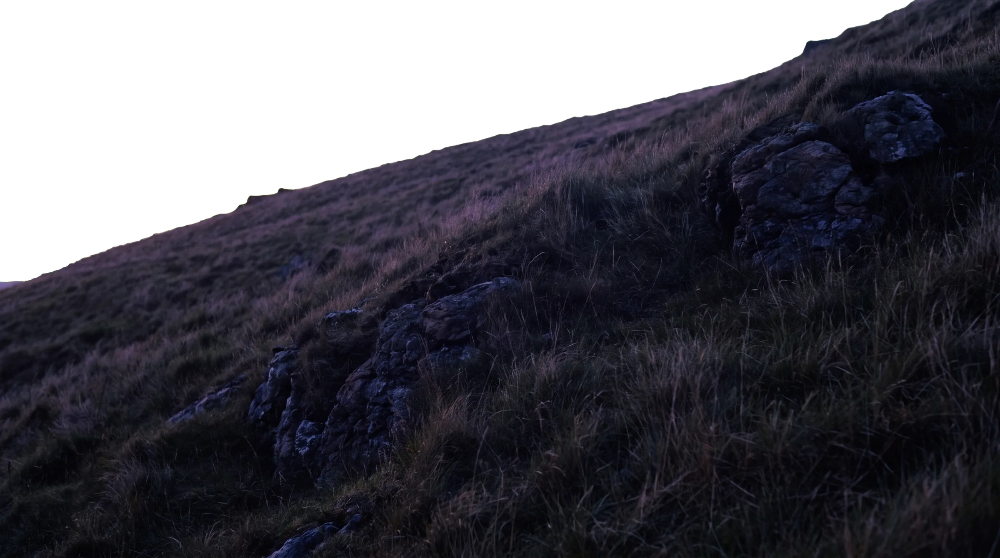
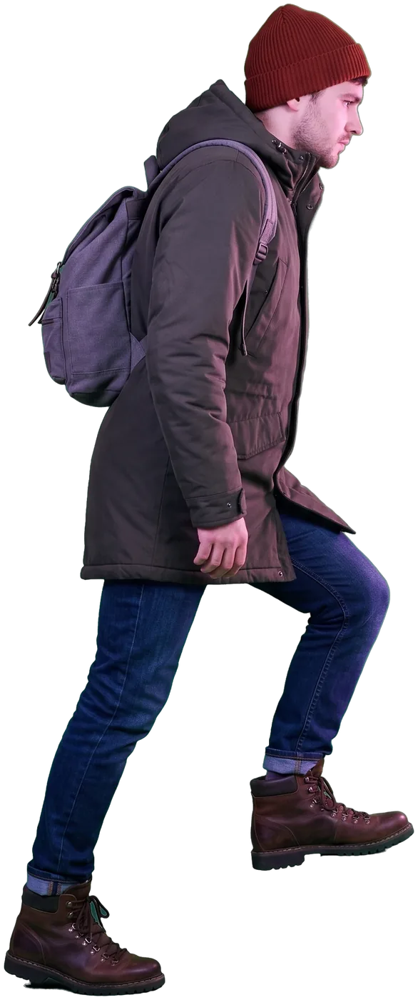
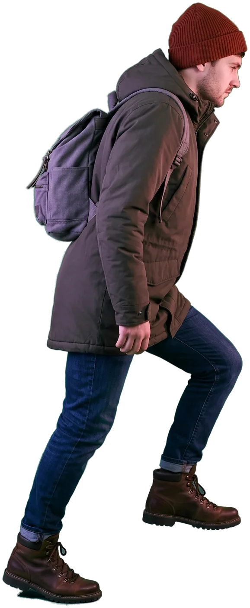
Пять утра. Раньше я видел его только перед сном.
Лист V · Склон · 05:02
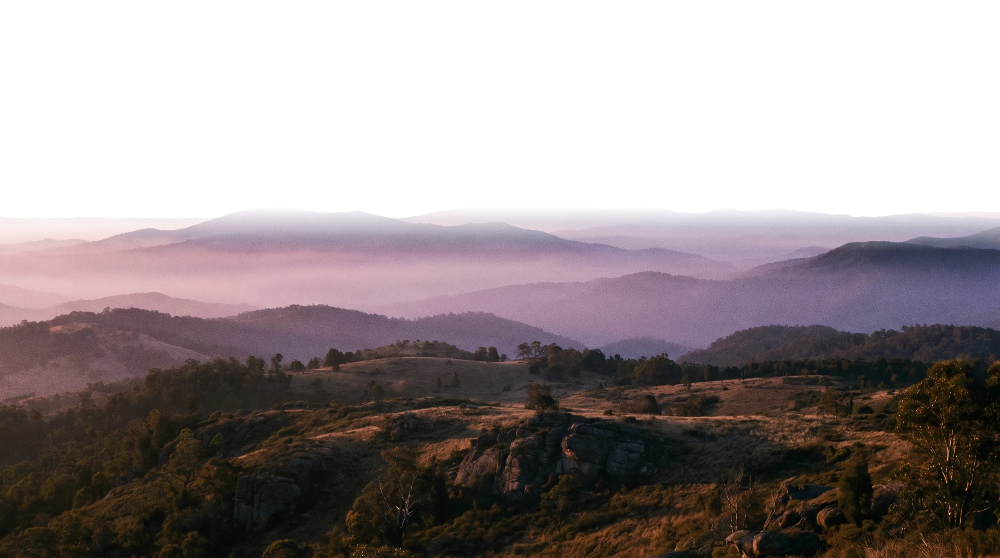
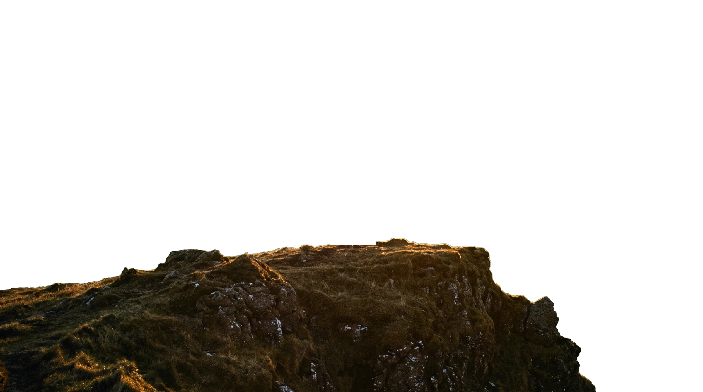
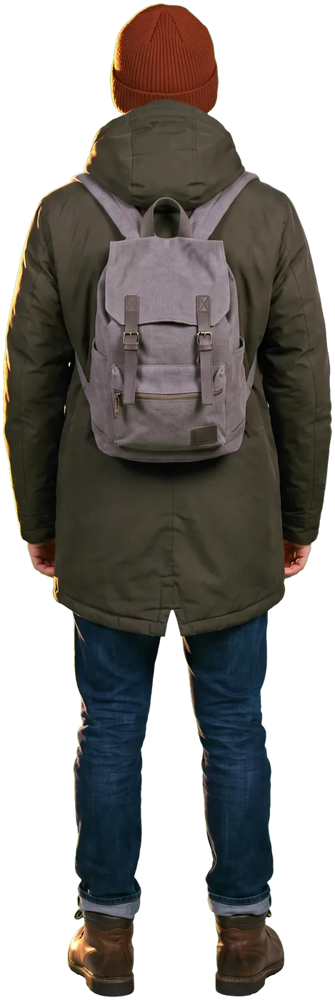
Ладно, жаворонки. Вы были правы.
Лист VI · Рассвет · 05:30
Признаюсь: я из бумаги. Нам спать необязательно.
Лист VII · Закулисье
Программка
Рассвет
Пьеса в семи листах. Действие происходит с 03:12 до 05:47 — во время, которое герой раньше видел только перед сном.
В ролях
- Я
- впервые не ложился ради утра
- Будильник
- заведён на 03:00, не понадобился
- Солнце
- встаёт так ежедневно, без выходных
- Небо
- градиент в ночную смену
- Туман
- два слоя, тоже не выспались
- Фонари
- восемь копий одного, дежурят
- Вы
- прокрутка
Сегодня просплю до вечера. Но этот рассвет уже мой. Спасибо, что дошли со мной.